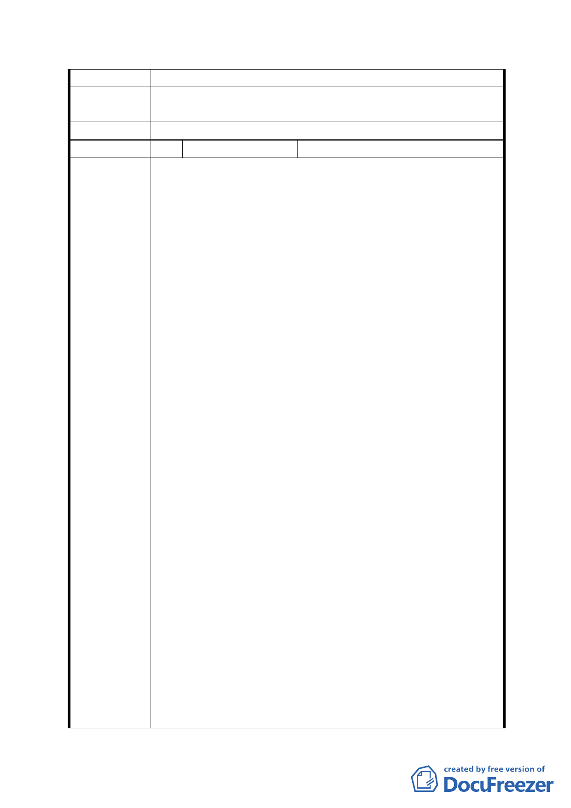

審查結論
市府修正後
回應說明
同編號 7、12、18。
委員會決議 同意依「市府修正後回應說明」辦理
編 號 21 陳情人
沈弘哲
一、建議位置：興泰里、興旺里、興豐里、及萬盛里北側芝
蘭山及蟾蜍山地段
1. 此區現為「公墓用地」，內部包括景美12號／13號公
墓、福興公墓及福壽公墓。
2. 破壞山坡地水土保持，造成福興路積水問題，並使
積水回堵至興德路。
3. 破壞住宅區及捷運景觀，阻礙捷運商圈其人口增加
之發展。
二、建議位置：辛亥路四段、萬美街、興德路66巷間之土地
1.反對國中用地改為「防洪調節池」用地，因此區並無
嚴重難以解決之積水問題，故並無必要性及急迫性。
2.反對軍營所在之國高中用地改為「機關用地」，就地
合法後，無法推動都市更新及捷運商圈。
三、建議位置：興德路66巷西南側之軍營
1. 軍營為憲兵及防暴部隊，軍營駐此已逾30年。隨文山
區快速發展至今，部隊衛戍台北市之功能及戰術位置
陳情理由
已不存在，反而成為區域發展之阻礙的絆腳石。
2. 軍營應依95年2月都市計畫，由市府協助搬遷。
3. 軍營搬遷後，興泰里、興昌里、興光里等鄰里之都市
更新及捷運商圈，新社區建築將帶動人口大量增加，
仍有國中、高中需求。
四、建議位置：興昌里、興泰里、興光里、萬美里、興旺里、
興豐里、萬盛里、興得里、興業里
1. 辛亥國高中用地及辛亥捷運站周邊區域為文山區與
大安區之敦南商圈／台大復興商圈最接近地點，位置
佳具高度經濟價值及區域發展潛力。
2. 文山區唯一一處可變大安區共享都市山林公園且山
林南北側皆有密集住宅之絕佳地點，具觀光及休憩功
能。
3. 軍營／墓地／貯留池／加油站破壞並阻礙區域發展。
4. 交通便捷，具捷運木柵線及北一高／北二高引道。
五、建議位置：文山區興泰段一小段821地號
1. 目前為道路用地，然已無使用狀況10年以上。
- 29 -